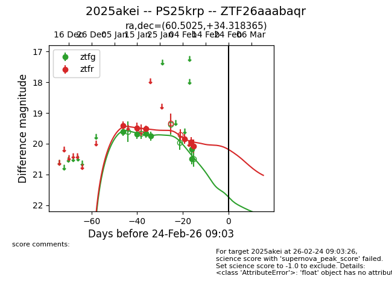
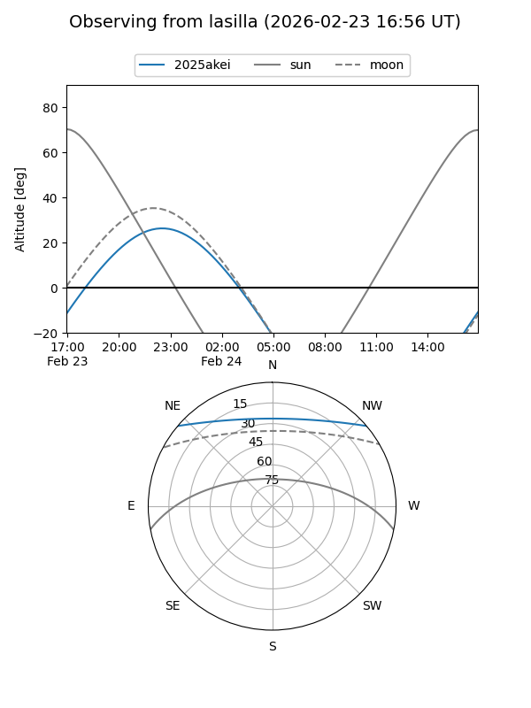
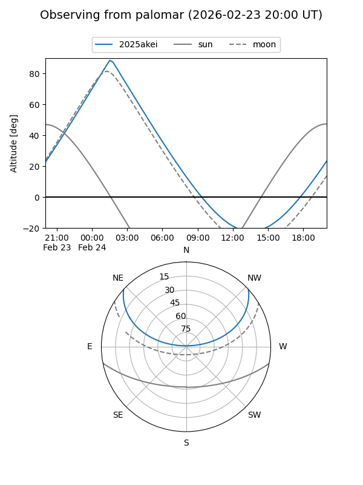
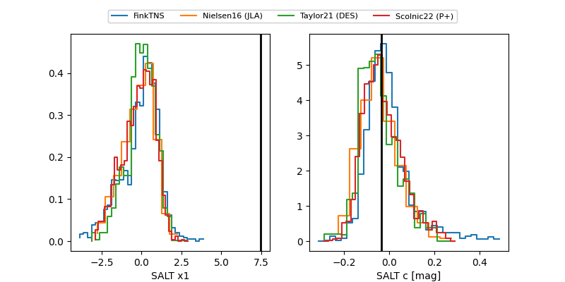

2025akei
Target 2025akei at 2026-01-21 08:51
Aliases and brokers:
FINK: link
Lasair: link
ALeRCE: link
TNS: link
YSE: link
alt names
ZTF26aaabaqr (ztf,fink_ztf)
2025akei (tns,yse)
PS25krp (panstarrs)
Coordinates:
equatorial (ra, dec) = 60.5025,+34.31836
equatorial (HMS+DMS) = 04:02:00.60,+34:19:06.11
galactic (l, b) = (161.8644,-13.77817)
Flags:
Photometry:
last ztfg=19.75, ztfr=19.50
4 ztfg, 3 ztfr detections
Lightcurve

Visibility


Additional plots
